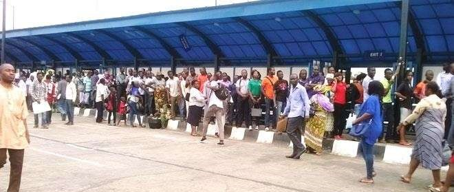

RouteIQ

About
Transforming Lagos’ transport, one route at a time.
Industry
Smart Transportation, Urban Tech
Location
Lagos, Nigeria
Stage
Pilot
Date Initiated
2024
-
Challenge
- Lagos, one of Africa’s fastest-growing cities, faces a severe urban transportation crisis. The existing BRT system, while innovative, struggles with inefficiencies, long wait times, and poor route optimization. Commuters often face hours of uncertainty, leading to economic losses, reduced productivity, and decreased quality of life. The congestion also contributes to environmental degradation and public health concerns.
-
Solution
- RouteIQ offers a comprehensive solution to Lagos’ public transport woes. By integrating real-time GPS tracking, AI-driven route optimization, and a user-friendly mobile app, RouteIQ aims to streamline bus schedules, reduce wait times, and provide commuters with real-time updates. This solution will revolutionize how Lagosians interact with public transport, leading to a more efficient and reliable system that benefits the economy and environment.
-
Execution Plan
-
The execution plan for RouteIQ involves several key phases:
- Phase 1: Research and Development - Conduct comprehensive research on existing BRT systems, gather data on Lagos’ traffic patterns, and develop the AI-based route optimization algorithms.
- Phase 2: Pilot Testing - Deploy the RouteIQ platform in select BRT routes in Lagos to test its functionality, gather user feedback, and refine the system.
- Phase 3: Full Rollout - Expand the platform to cover the entire Lagos BRT system, integrating additional features like digital bus passes and real-time bus tracking.
- Phase 4: Continuous Improvement - Regular updates to the platform based on user feedback and data analysis, ensuring RouteIQ evolves with the needs of Lagos commuters.
-
Product Details
-
RouteIQ transforms Lagos' public transport by offering a smart solution for the BRT system. Our platform includes real-time tracking, digital bus passes, and AI-based route optimization. These features work together to create a more efficient, reliable, and user-friendly public transportation system.
- Real-Time GPS Tracking - Provides commuters with live updates on bus locations.
- AI-Powered Route Optimization - Adjusts bus routes dynamically to reduce wait times and congestion.
- Mobile App Integration - Allows users to track buses, purchase digital tickets, and receive notifications on delays or route changes.
-
Broader Impact
- The implementation of RouteIQ extends beyond improving public transport in Lagos. By easing congestion and reducing commute times, RouteIQ will enhance productivity across the city, contribute to economic growth, and improve public health by lowering pollution levels. Additionally, the data generated by RouteIQ can be leveraged for urban planning, optimizing other public services and infrastructure projects. This makes RouteIQ not just a transport solution, but a catalyst for broader urban development.
-
Team
-
RouteIQ is powered by a dedicated team of experts:
- Adewale Victor: Tech Lead with extensive experience in urban technology and software development.
- Daniel Ogunyemi: Marketing and Brand Strategy Expert with a focus on digital transformation and consumer engagement.
Product
RouteIQ transforms Lagos' public transport by offering a smart solution for the BRT system. Our platform includes real-time tracking, digital bus passes, and AI-based route optimization, ensuring that commuters can travel efficiently and reliably.
Team
Adewale Victor: Tech Lead, with a focus on urban technology and software development. Led multiple successful tech projects across Nigeria.
Daniel Ogunyemi: Marketing and Brand Strategy Expert, bringing a wealth of experience in digital transformation and consumer engagement.
Details:
- Industry: Smart Transportation, Urban Tech
- Location: Lagos, Nigeria
- Stage: Pilot
- Date Initiated: 2024
-
Visual Representation
-

Long queues at Lagos BRT stations, highlighting the inefficiencies in the current system.

Overcrowded buses during peak hours, showing the strain on the system.